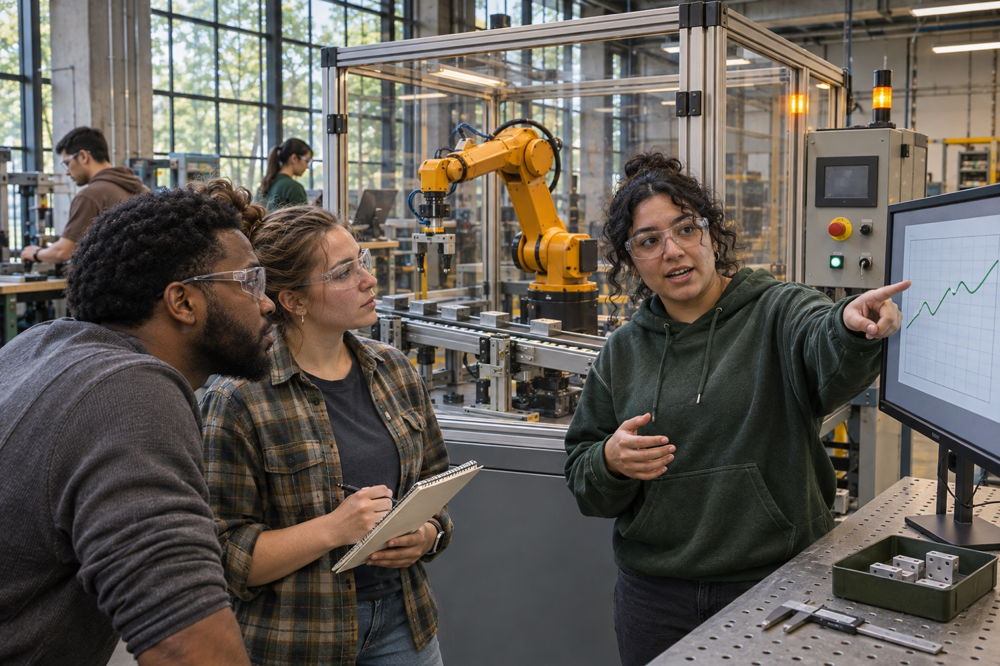
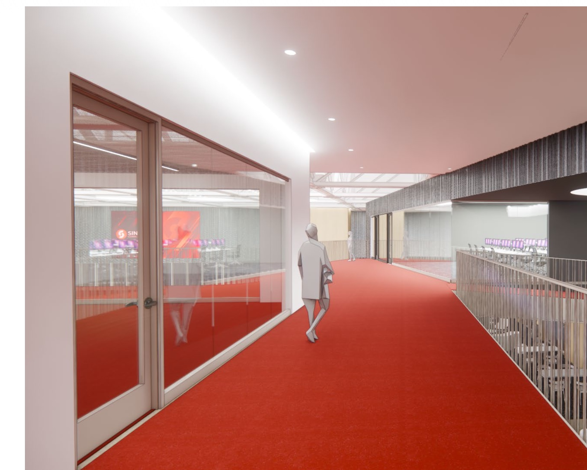
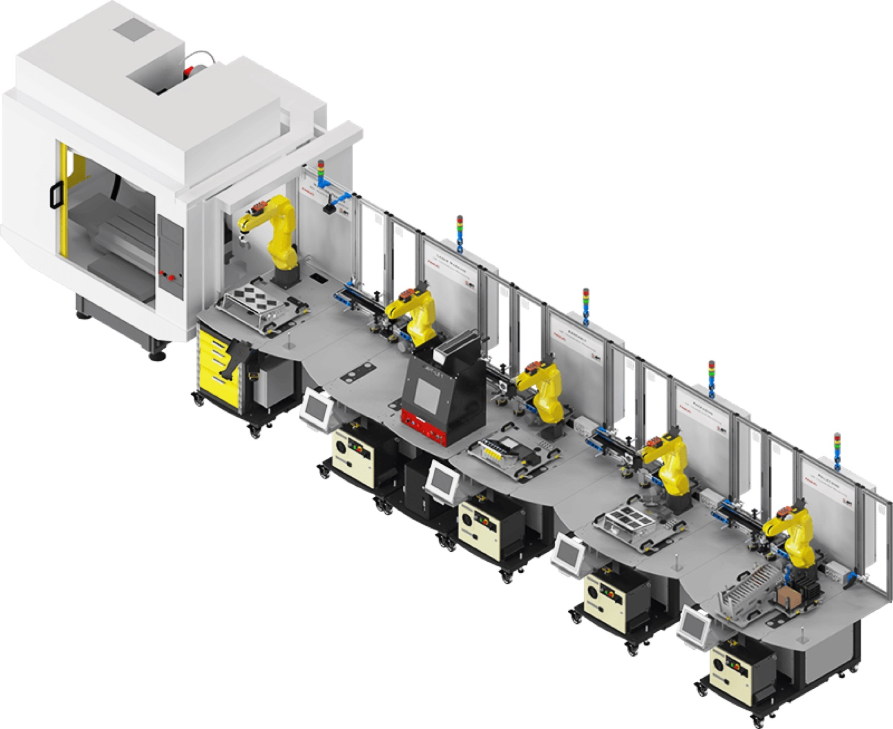

Systems exchange signals
A robot, a sensor, and a controller report what happened at each station. The network carries those signals to the systems that need them.
ITEC board briefing
At Sinclair’s Integrated Technology Education Center, students would see how a change in one classroom affects another. It’s practice for the workplace, where people in robotics, IT, data, and operations have to keep the same systems running together.

The teaching approach
Each course keeps its own learning objectives. As students see how their work affects other classrooms, they practice explaining what a technical change means for the people who depend on it.
A robot, a sensor, and a controller report what happened at each station. The network carries those signals to the systems that need them.
They connect a signal to the work in progress and the people who rely on it. A change at a robot can affect when another class receives a batch, just as it can change when a plant fills an order.
Students explain what changed, what they verified, and who needs to act next. That’s the same information a technician needs to hand off to a supervisor or the next shift.
Workforce readiness
A manufacturer adds a quality check to an automated packaging line. The robot now reports the result, each part takes longer, and the supervisor needs to know when the next batch will be ready. ITEC lets students practice how those teams work through the change together.
Tell the next team what changed, what the network and machine records confirm, what it means for the batch, and who owns the next check. Try the packaging walkthrough.
Workplace role references · Network and systems administration · Robotics technicians · Logistics
Building 8
The Smart Factory and the building’s own systems would give students something real to observe. The classroom network would carry their data to the second-level Instructional Server Center (ISC). The Data Analytics Lab would make it visible on large screens.
Illustrative examples
A robotics class adds an inspection step. During a regular practice run, the controller reports when inspection is complete. The class can follow the event the way a plant team would verify a change before relying on the new production data.
The controller reports inspection completion and sends the cycle time.
Inspection completeNetworking students work with the robotics team to follow the message from the controller to the servers.
Message receivedServer students verify that the teaching database saved the station, time, and cycle length.
Cycle time · 12 s → 14 sA large display shows the change in cycle time. Supply chain students use it alongside output counts to estimate when the next batch could be ready.
When will the batch be ready?The building starts a scheduled ventilation cycle. Its heating, ventilation, and air conditioning (HVAC) equipment reports that a fan has started. Students can compare that event with the temperature trend.
The facility reports fan status and temperature readings from across the building.
Fan starts at 9:00 a.m.The classroom network makes a read-only feed of facility readings available to the instructional servers.
Status and readings receivedServers store the fan event and temperature readings so students can compare them by time and location.
Time and zone recordedA large display puts the fan event beside the temperature trend. Students can explain what they would ask Facilities to check.
What changed after startup?Example events and values illustrate the planned flow of information.
Floor plans
The planned second-level teaching data center houses the rack-mounted servers that collect and store data from the factory and building.
Students learn how the network connects the classrooms and practice monitoring the connections that carry their data to the ISC.
Students use SQL and visualization tools to compare data across rooms. Large screens make classroom and facility activity visible.
Students practice cybersecurity monitoring and response in a classroom simulation.
The center would actively monitor cybersecurity for Sinclair.
The proposed APT line would generate production counts, machine status, and cycle times.
Students program and test robot behavior, then compare the events their changes produce.
Students could test a new tool or simulation against records from the existing workflow.
Students track product IDs, receive finished goods, and reconcile inventory.
Students work with connected sensors and compare equipment readings with production or facility data.
The Data Analytics Lab would bring these feeds together with data from HVAC systems throughout the building and other facility equipment. Large displays would show what is happening across the center during the day.

Second level
The ISC is ITEC’s teaching data center. Rack-mounted servers in this room would receive data from the APT line, the classroom labs, and facility systems such as HVAC.
When a robot reports a completed cycle, students in the ISC could verify that the message arrived, check that the record was saved in the teaching database, and make the data available to the Data Analytics Lab. They would also practice monitoring the servers and tracing a missing record.
Cybersecurity
Live Sinclair operations
The Working Security Network Operations Center would actively monitor Sinclair’s cybersecurity. The college’s security team could review real alerts, investigate what happened, and coordinate a response with the teams responsible for affected systems.
Classroom simulation
The Teaching Security Network Operations Center would serve as a classroom. Students could practice reviewing simulated alerts, deciding what needs attention, and explaining the next steps to IT or operations in a training scenario.
The APT example
When an automated line pauses at work, robotics, networking, and operations staff have to compare what they know before deciding what to do. The APT training system could give Sinclair students practice making that handoff.

Equipment under consideration
This is the robotics training system Sinclair is considering for ITEC. APT’s CSM stations can run individually for focused instruction or connect into a full line for a shared project.
In APT’s logistics example, robots mark, assemble, and package parts. Radio-frequency identification (RFID) tags track the parts, programmable controllers coordinate the stations, and a SQL database supports analysis.
View APT’s system detailsIllustrative teaching scenario
In another scenario, a tagged part reaches packaging and the line pauses. See what six roles would check and what each would report to the team.
Robotics students read the robot’s status and check whether it received an instruction to move. They can confirm what the robot was ready to do when the line paused.
What they tell the team “The robot is ready and waiting for a command. Let’s check what the controller needs before it can send one.”
Industrial controls students trace the sequence in the programmable logic controller (PLC). The sensor detected a part, and the controller is waiting for a valid ID from the tag reader.
What they tell the team “Packaging detected the part. The next step requires an ID, and the controller is still waiting for it.”
Networking students confirm the station stayed online during the pause. They work with controls students to check whether the tag reader’s message reached the controller. On a plant floor, those checks help determine which team should investigate next.
What they tell the team “The station stayed connected. We still need to verify whether the reader sent a valid ID.”
In the proposed ITEC exercise, cybersecurity students verify that the team can read the training logs and that only designated operators can change machine settings. The Teaching SNOC could use a simulated version of the event to practice handing off a finding.
What they tell the team “Everyone investigating the pause can see the logs. Let’s route any change to the designated operator and record it.”
Data students use SQL to query the training database. They line up the last confirmed record for part 027 with the next station’s timestamp and check for the missing identification event.
What they tell the team “The timestamps suggest part 027 reached packaging at 10:14:03. We still need the ID confirmation to be sure.”
Quality and operations students account for the affected part and decide what evidence they need before it can move forward. They prepare a clear handoff for the instructor or next shift.
What they tell the team “Keep part 027 on hold. We need a supervised test that shows the ID is recorded before we release it.”
“Packaging paused while waiting for a valid ID. The sequence points to part 027. The robot was ready and the station stayed connected. Our next step is to verify the reader-to-controller handoff and record the result of a supervised test before releasing the part.”
Supply chain & emerging technology
The smart factory could make a real training product for another class to receive. Supply chain students would practice the same checks used on a receiving dock, comparing what arrives with the shipment record before updating inventory.
Robotics and controls students could assemble and pack tins of marked parts on the APT line and stage the finished tote for pickup.
RFID students use readers at the line to verify item IDs. They associate those IDs with a batch and check which items are ready for pickup.
A proposed autonomous mobile robot (AMR) would carry the tote from the line to a receiving classroom and report pickup and delivery.
Supply chain students compare the physical count and RFID reads with the expected shipment. They post the verified receipt, record the storage location, and investigate any mismatch.
ISC students would collect production events from the APT line, reads from the RFID checkpoints, delivery status from the mobile robot, and the receiving record. In a teaching database, they’d use SQL to connect those events by batch or item ID, verify that each step was recorded, and share exceptions with the team that can resolve them. A shared dashboard could show which batches are ready, in transit, received, or on hold.
Illustrative receiving exercise
The delivery status tells us the tote arrived. The receiving team still needs to confirm what’s inside.
Batch B-027 · Ready to receive
Supply chain students confirm the item IDs and post the receipt. ISC students check that the production, delivery, and receiving records agree.
Batch B-027 · Receipt on hold
The tote contains all 12 items, but one ID didn’t register at receiving. Supply chain holds the receipt, RFID students recheck the tag, and ISC students use the earlier reads to trace the missing ID.
Proposed ITEC workflow. The APT line is under purchase consideration. The mobile delivery robot is a separate proposed addition.
Future readiness
The building needs to make it practical for faculty to teach with the next tool and for students to work with people whose expertise differs from their own.
Board discussion
Start with an ordinary robotics class. Ask students to verify a change across the equipment, network, and servers, then explain its effect on production in a shift handoff an employer could review.
The building is part of the course because it gives students practice working the way people work after graduation. A plant’s robotics technician, network technician, and production supervisor all depend on the same equipment and data to make different decisions.
Imagine adding an inspection step to the packaging line. A robotics student tests it. A networking student works with them to make sure the controller’s message reaches the servers. Students in the Instructional Server Center check the record, and analytics students show how the change affects the time it takes to make a part. Supply chain students use that information to estimate when the next batch can be received.
Each course keeps its own learning goals. The building lets students see what their work means for someone else’s job. They practice verifying what happened, explaining who is affected, and leaving a handoff the next team can act on. The same skills apply when technicians and analysts monitor a building’s HVAC systems.
Board briefing
In Building 8, students would see how work in one class affects people and systems in another. Each course keeps its learning objectives while students practice how robotics, IT, data, and operations teams work together on the job.
On the APT line Sinclair is considering, robotics students could test a new inspection step and work with networking students to verify the controller’s message reaches the second-level Instructional Server Center (ISC). Server students would check the record, analytics students would compare cycle times in SQL, and supply chain students would estimate when the batch could be received.
Students hand off what changed, how they verified it, what it means for production, and who needs to act next. Employers can use that handoff to assess both technical troubleshooting and communication across teams.
Analytics students work with data from Smart Factory, Robotics, Supply Chain / RFID, Internet of Things, and Emerging Tech. The lab also brings building-wide HVAC and facility readings to the large displays. Students can compare a fan’s start time with temperature readings and explain what they would ask Facilities to check.
Robotics students make and pack a batch. RFID students verify the tags. A proposed mobile robot carries the tote to a receiving classroom, where supply chain students compare what arrived with what was expected and post inventory. ISC students capture the events and use SQL to connect production, transport, and receiving records.
The Working SNOC would actively monitor Sinclair’s cybersecurity. In the Teaching SNOC, students would practice reviewing and responding to simulated incidents.
Faculty, IT, and Facilities support the teaching environment. Students learn to connect the data they see to the decisions another team has to make.
Sinclair’s project announcement · APT Connected Smart Manufacturing · Communication in Context